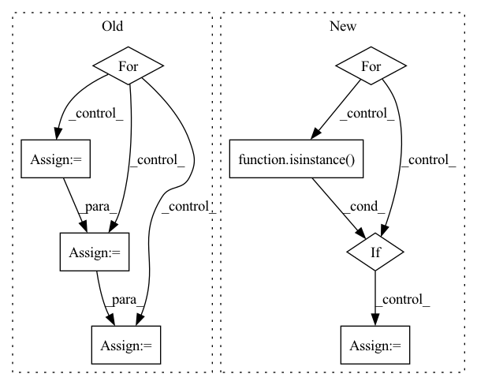

Pattern ID :582
Before Change
x = self.mid_attn(x)
x = self.mid_block2(x, t)
for resnet, resnet2, attn, upsample in self.ups:
x = torch.cat((x, h.pop()), dim=1)
x = resnet(x, t)
x = resnet2(x, t)
x = attn(x)
x = upsample(x)
return self.final_conv(x)
After Change
x = layer(t)
feats.append(x)
for layer in self.mid:
if isinstance( layer, ResnetBlock):
x = layer(x, t)
else:
x = layer(t)
for layer in self.ups:
if isinstance(layer, ResnetBlock):In pattern: SUPERPATTERN
Frequency: 3
Non-data size: 8
Instances Fragment ID: 2240800
Project Name: janspiry/image-super-resolution-via-iterative-refinement
Commit Name: a843610e321ec7e1898e97dd495f8991182b8b87
Time: 2021-07-30
Author: lw_jiang@foxmail.com
File Name: model/unet.py
M Class Name: UNet
N Class Name: UNet
M Method Name: forward(3)
N Method Name: forward(3)
M Parent Class: nn.Module
N Parent Class: nn.Module
M File Name: model/unet.py
N File Name: model/unet.py
M Start Line: 202
M End Line: 224
N Start Line: 216
N End Line: 238
Before Change
x = self.mid_attn(x)
x = self.mid_block2(x, t)
for resnet, resnet2, attn, upsample in self.ups:
x = torch.cat((x, h.pop()), dim=1)
x = resnet(x, t)
x = resnet2(x, t)
x = attn(x)
x = upsample(x)
return self.final_conv(x)
After Change
x = layer(t)
feats.append(x)
for layer in self.mid:
if isinstance( layer, ResnetBlock):
x = layer(x, t)
else:
x = layer(t)
for layer in self.ups:
if isinstance(layer, ResnetBlock): Fragment ID: 2241075
Project Name: janspiry/image-super-resolution-via-iterative-refinement
Commit Name: 519d366759ea639a68262c20661fa8af7e85cfc6
Time: 2021-07-30
Author: jiangliangwei@tetras.com
File Name: model/unet.py
M Class Name: UNet
N Class Name: UNet
M Method Name: forward(3)
N Method Name: forward(3)
M Parent Class: nn.Module
N Parent Class: nn.Module
M File Name: model/unet.py
N File Name: model/unet.py
M Start Line: 202
M End Line: 224
N Start Line: 216
N End Line: 238
Before Change
self.layers.append(prenorm_fn(layer))
def forward(self, x, context = None, mask = None, context_mask = None):
for (layer_type, block) in zip(self.layer_types, self.layers):
if layer_type == "a":
x = block(x, mask = mask, rel_pos = self.rel_pos) + x
elif layer_type == "c":
x = block(x, context = context, mask = mask, context_mask = context_mask) + xAfter Change
def forward(self, x, context = None, mask = None, context_mask = None):
prev_attn = None
for (layer_type, (norm, block)) in zip(self.layer_types, self.layers):
if self.pre_norm:
x = norm(x)
if layer_type == "a":
attn_out, pre_attn = block(x, mask = mask, rel_pos = self.rel_pos, prev_attn = prev_attn)
x = x + attn_out
elif layer_type == "c":
attn_out, pre_attn = block(x, context = context, mask = mask, context_mask = context_mask, prev_attn = prev_attn) + x
x = x + attn_out
elif layer_type == "f":
x = block(x) + x
if isinstance( block, Attention) and self.residual_attn:
prev_attn = pre_attn
if not self.pre_norm:
x = norm(x)
return x
Fragment ID: 2240827
Project Name: lucidrains/x-transformers
Commit Name: 257fee10394c3cfb3467537dba53d8a610dc8aee
Time: 2020-12-27
Author: lucidrains@gmail.com
File Name: x_transformers/x_transformers.py
M Class Name: AttentionLayers
N Class Name: AttentionLayers
M Method Name: forward(5)
N Method Name: forward(5)
M Parent Class: nn.Module
N Parent Class: nn.Module
M File Name: x_transformers/x_transformers.py
N File Name: x_transformers/x_transformers.py
M Start Line: 334
M End Line: 341
N Start Line: 350
N End Line: 370